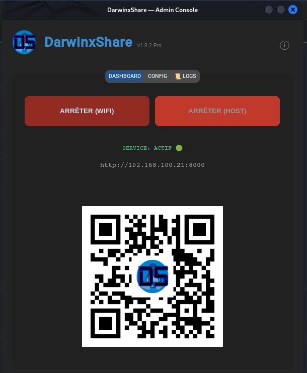
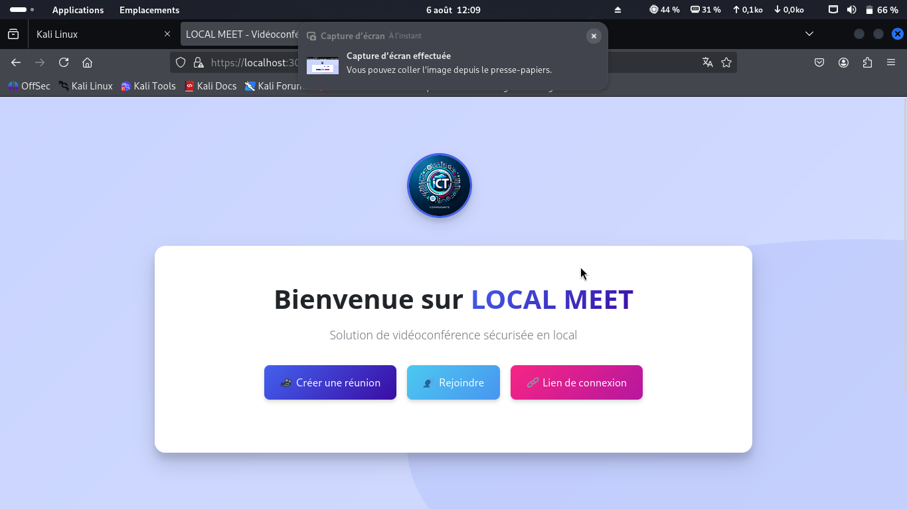
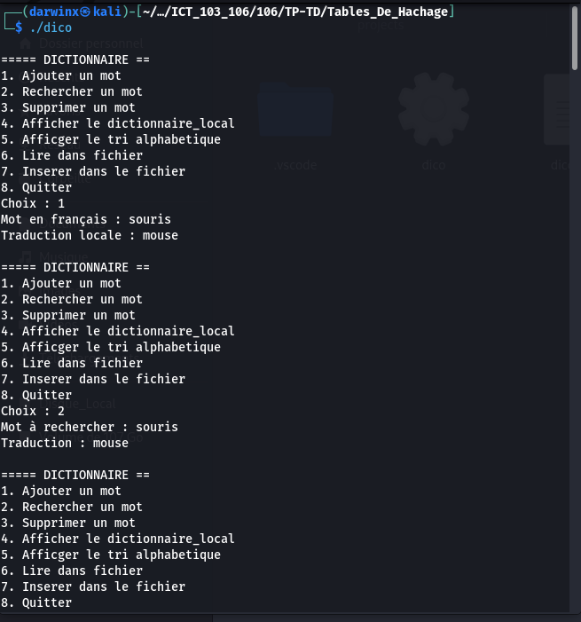
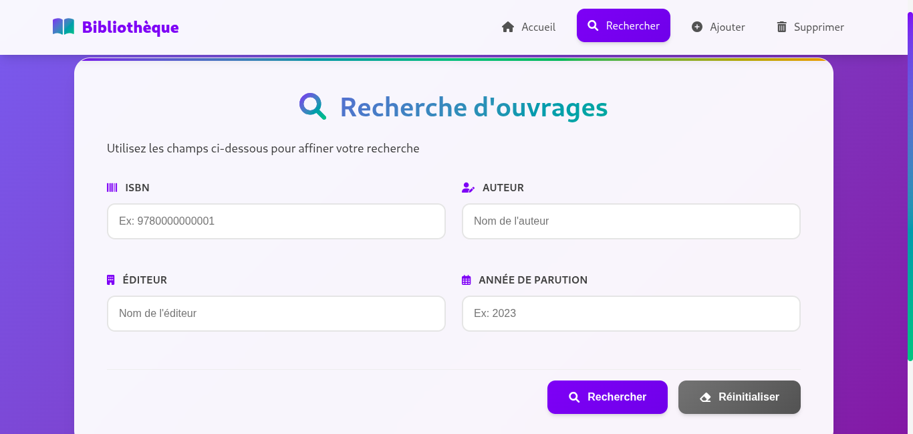
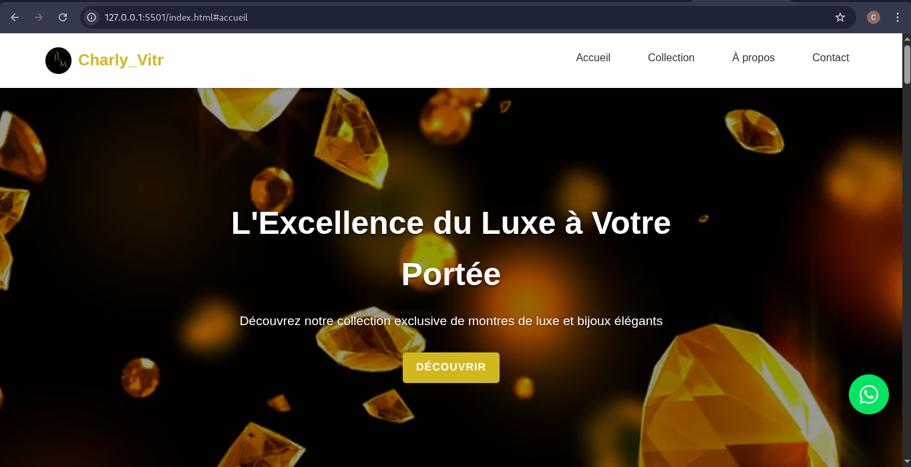
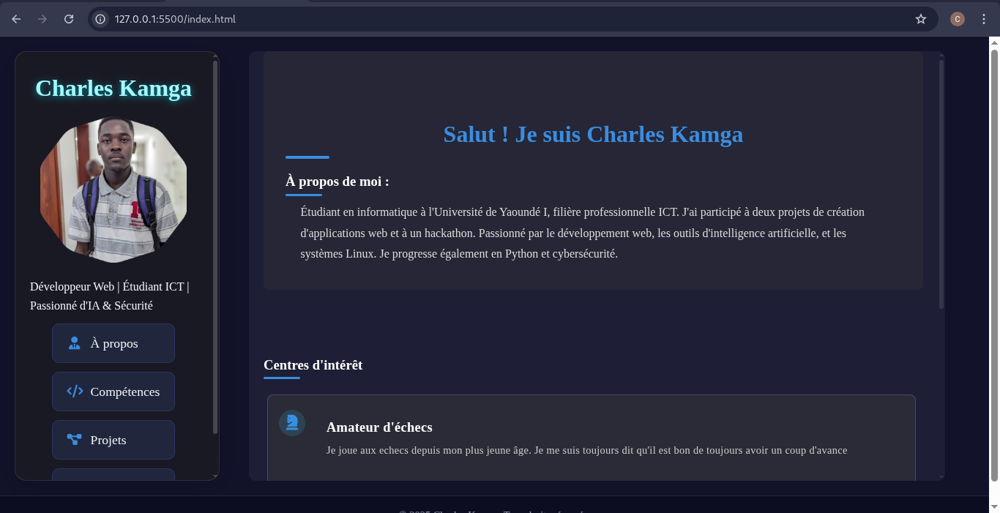

DarwinxShare Pro
Partage de fichiers haute performance entre Linux et iOS via Wi-Fi. Optimisé pour le streaming Safari.
PythonFlaskCustomTkinter
Bienvenue dans mon catalogue de solutions. Cette section regroupe mes travaux les plus aboutis, allant de l'architecture backend robuste à l'analyse de sécurité offensive. Chaque projet est une réponse concrète à un défi technologique spécifique.

Partage de fichiers haute performance entre Linux et iOS via Wi-Fi. Optimisé pour le streaming Safari.

Application de visioconférence temps réel avec WebRTC et partage d'écran sécurisé.

Implémentation performante en C avec tables de hachage et gestion avancée des collisions.

Système complet de gestion d'ouvrages et d'emprunts avec interface d'administration MVC.

Application mobile de vitrine commerciale pour présentation dynamique de produits.

Refonte complète avec design système moderne, dashboard d'identité et scroll snapping.